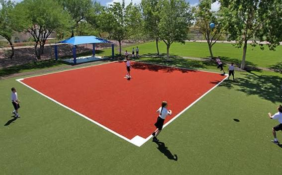

Festival
Fall Quad Festival
The semester's biggest welcome-back bash: forty student organizations, three food trucks, a battle-of-the-bands stage, and the annual lantern walk at dusk.
View details for Fall Quad FestivalFall semester is in full swing!
Talbrook Commons gathers every club fair, guest talk, concert, and pickup game from across Talbrook University into one place, so you never have to scroll five different groupchats to figure out what's going on this week.
See upcoming eventsFive things worth clearing your evening for.
The semester's biggest welcome-back bash: forty student organizations, three food trucks, a battle-of-the-bands stage, and the annual lantern walk at dusk.
View details for Fall Quad Festival
Eight student teams pitch to a panel of local founders and alumni investors. Open floor for audience questions after each round.
View details for Startup Pitch Night
The Talbrook Jazz Society plays a free outdoor set beneath the courtyard arches. Bring a blanket; cocoa and cider are provided.
View details for Jazz Under the Arches
Registration opens for fall league play. Show up solo or bring a full roster — the Rec Center helps free agents form teams on the spot.
View details for Intramural Kickball Kickoff
Volunteers helping plant trees around campus. No experience needed.
View details for Community Service SaturdayTalbrook Commons is built and maintained by the Office of Student Engagement to solve one problem: campus life happens across dozens of separate calendars, flyers, and group chats, and most students only hear about an event after it's over. We pull listings from every recognized student organization, department, and the Rec Center into a single, browsable guide.
Every listing on this site is submitted by a real student organizer and reviewed by our office before it goes live, so what you see here is happening, current, and open to you.